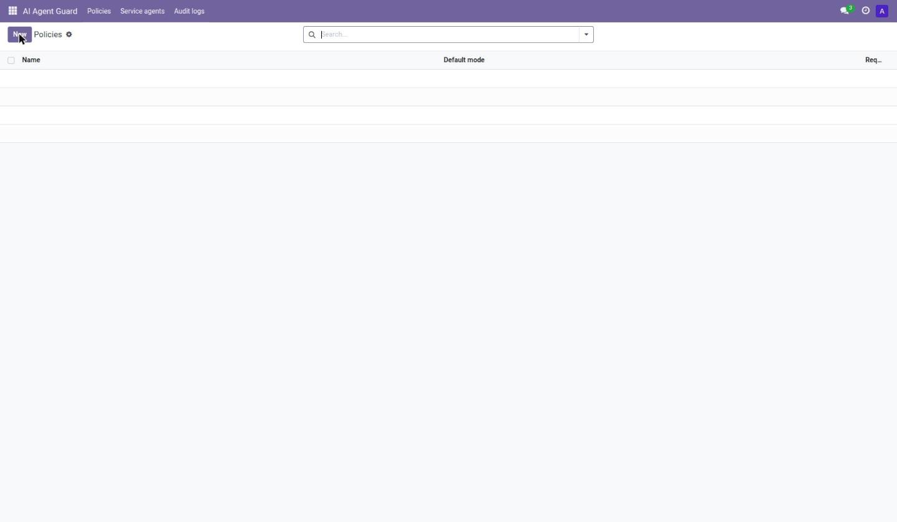

A control panel inside Odoo for teams running the open-source erp-agent-guard policy gateway in front of their AI agents. The gateway runs outside Odoo on purpose — that separation is its trust boundary — and this module does not weaken it. It handles the three things that are painful to do by hand.
Per-agent model and field allowlists, PII masking, quotas and the
approval settings — edited in Odoo and exported as the precise
policy.yaml the gateway loads. No hand-written YAML, no drift
between what you think the policy says and what the gateway enforces.
Create the dedicated Odoo user the gateway authenticates as, and mint its
API key. The key is shown once; Odoo stores only the last four
characters — matching the gateway's rule of never holding the secret. The
ready-to-paste MCP env block is generated for you.
Import the gateway's append-only audit.jsonl and verify its
hash chain with the identical algorithm the gateway uses. An edited,
deleted or reordered line is flagged — including a line edited directly in
the database. The verifier ships with a frozen golden-vector test that keeps
it byte-for-byte compatible with the gateway.
A dedicated app with Policies, Service agents and Audit logs — the three surfaces a team governing MCP agents actually works in.

This module is a companion to erp-agent-guard; it does not replace Odoo's
own access rights (ir.model.access, record rules, field groups)
— those stay your first layer. The audit log is tamper-evident, not
tamper-proof: ship it to WORM storage or a SIEM if you need the latter.
License LGPL-3.